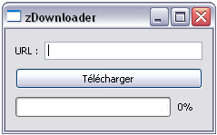
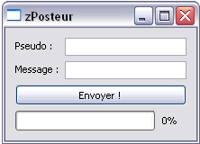
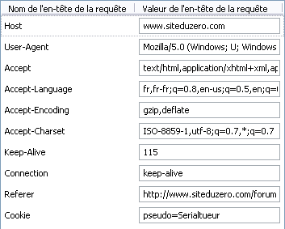

Qui n'a jamais rêvé de faire une fonction "Mise à jour" à son programme ? Qui n'a jamais voulu envoyer des messages sur le net avec son programme ? Toutes les questions que vous vous posez sur le protocole HTTP avec Qt trouveront réponses dans ce tutoriel ! (Ces questions sont assez récurrentes, et d'ailleurs ça m'a pris tellement de temps de comprendre ce système que je me suis dit "Quand j'y arrive, je fais un tuto dessus !" :D ).
Avant tout, mettons les choses au point. Nous allons utiliser plusieurs bibliothèques du Framework Qt, il va donc falloir faire les inclusions nécessaires.
Les bibliothèques que nous allons utiliser nécessitent ces inclusions :
Mais ce n'est pas tout. Pour travailler sur le réseau, il faut modifier le .pro généré avec la commande :
qmake -project
Dans votre fichier .pro, vous devez ajouter la ligne suivante :
QT += network
Enfin, si vous utilisez les bibliothèques dynamiques de Qt (ce qui est normalement le cas), vous devez ajouter QtNetwork4.dll dans votre dossier qui contiendra votre exécutable, sous peine d'obtenir une affreuse erreur à la ...
Vous trouverez cette bibliothèque, comme toutes les autres, dans le répertoire bin du dossier d'installation de Qt, soit par défaut C:\Qt\4.x.x\bin .
- Includes ? - Prêtes ! - QMake ? - Prêt ! - .Pro ? - Prêt ! - DLLs ? - Prêtes ! - On est bon, paré au décollage ?
C'est parti ! Le but de cette partie va être de réaliser un utilitaire de téléchargement : l'utilisateur rentre une URL, appuie sur un bouton, voit une barre de téléchargement qui défile et hop, le fichier arrive !
Nous allons tout d'abord nous mettre d'accord sur le projet de départ, j'ai réalisé une petite interface très simple :

Vous remarquerez le titre du projet très original :p .
#ifndef HEADER_FENPRINCIPALE
#define HEADER_FENPRINCIPALE
#include <QtGui>
class FenPrincipale : public QWidget
{
Q_OBJECT
public:
FenPrincipale();
private slots:
private:
QVBoxLayout *verticalLayout;
QHBoxLayout *horizontalLayout;
QLabel *label;
QLineEdit *urlEdit;
QPushButton *demarrerTelechargement;
QProgressBar *progression;
bool erreurTrouvee = false; //Variable qui nous permet de savoir s'il y a eu une erreur ou non.
};
#endif
FenPrincipale.cpp
#include "FenPrincipale.h"
FenPrincipale::FenPrincipale()
{
//On donne une taille par défaut à la fenêtre
resize(228, 112);
setWindowTitle("zDownloader");
//On définit les layouts
verticalLayout = new QVBoxLayout(this);
horizontalLayout = new QHBoxLayout();
label = new QLabel(this);
label->setText("URL :");
horizontalLayout->addWidget(label);
//Le lineEdit qui contient l'URL entrée par le visiteur
urlEdit = new QLineEdit(this);
horizontalLayout->addWidget(urlEdit);
verticalLayout->addLayout(horizontalLayout);
demarrerTelechargement = new QPushButton(this);
demarrerTelechargement->setText("Télécharger");
verticalLayout->addWidget(demarrerTelechargement);
progression = new QProgressBar(this);
progression->setValue(0);
verticalLayout->addWidget(progression);
}
On attaque les choses sérieuses, que diable :diable: ! Bon, tout d'abord, on sait que tout va se passer lors du clic sur le bouton. Nous allons donc faire un slot telechargement() que nous allons connecter à notre signal de clic !
Je vous laisse définir ce slot telechargement() qui renvoie un simple type void.
demarrerTelechargement->setEnabled(false);
Attaquons nous aux choses sérieuses :pirate: : Tout d'abord, nous devons créer une requête. Nous allons donc utiliser la classe QNetworkRequest pour cela.
La classe QNetworkRequest prend comme paramètre une constante QUrl, c'est à dire une Url.
Tout ceci bien évidemment dans le slot telechargement();
Nous devons à présent créer un QNetworkAccessManager. Dans votre code final, vous n'aurez pas l'impression que cette classe sert à grand chose, car elle apparait dans 1 ligne seulement. Mais c'est en fait elle qui gère toute la requête et l'accès au réseau ! C'est le QNetworkAccessManager qui possède la méthode get(), qui va nous permettre de télécharger le contenu de notre fameuse URL. Cette méthode renvoie un QNetworkReply, la classe qui va nous permettre de traiter toutes nos données, c'est la "réponse du serveur". Nous allons utiliser un pointeur pour pouvoir traiter les données sans problèmes de portée. Récapitulation :
QNetworkAccessManager *m = new QNetworkAccessManager; //On crée le QNetworkAccessManager qui va traiter la requête
/*Ensuite, on utilise la méthode get() pour télécharger le contenu de notre requête.
On récupère un pointeur de QNetworkReply.*/
QNetworkReply *r = m->get(requete);
A présent, il va falloir connecter 3 signaux de QNetworkReply pour pouvoir traiter :
L'enregistrement dans un fichier (finished)
La barre de progression (downloadProgress)
La gestion des erreurs (error)
Nous allons donc créer ces trois slots et utiliser ces connect :
Commençons par le plus important : enregistrer notre fichier. Une fois que le slot est appelé, nous avons besoin de récupérer le contenu de notre QNetworkReply. Qt intègre une fonction qui permet ainsi la récupération du "sender" :
Nous récupérons ainsi la fameuse réponse du serveur.
Tout d'abord, il faut ouvrir le fichier à enregistrer, puis mettre le contenu de la réponse du serveur en entier.
Procédons donc de cette manière :
void FenPrincipale::enregistrer()
{
//On vérifie qu'il n'y a pas eu d'erreur.
if(!erreurTrouvee)
{
QNetworkReply *r = qobject_cast<QNetworkReply*>(sender()); //On récupère la réponse du serveur
QFile f("fichier.txt"); //On ouvre le fichier
if ( f.open(QIODevice::WriteOnly) )
{
f.write(r->readAll()); ////On lit la réponse du serveur que l'on met dans un fichier
f.close(); //On ferme le fichier
r->deleteLater(); //IMPORTANT : on emploie la fonction deleteLater() pour supprimer la réponse du serveur.
//Si vous ne le faites pas, vous risquez des fuites de mémoire ou autre.
//On indique que tout s'est bien passé
QMessageBox::information(this, "Fin de téléchargement", "Téléchargement terminé !");
}
close(); //On ferme le programme
}
}
Le slot progressionTelechargement()
A présent, quelque chose de bien plus simple, la barre de progression. On a vu que le signal downloadProgress a deux paramètres qui sont tous deux des qint64. Le premier correspond au nombre de bytes reçus et le second contient le nombre de bytes totaux.
Nous allons donc utiliser les méthodes setValue() et setRange() de notre barre de progression. Mais avant cela, une petite mise au point.
Pour calculer le pourcentage, la barre de progression utilise deux valeurs : la valeur et le total, soit respectivement setValue() et setRange(). Pour calculer le pourcentage, il faut calculer le pourcentage de la valeur par rapport au total, ce qui revient à faire : \frac{value}{range} imes 100 Pour obtenir une valeur en pourcentages. Par exemple, si on a un téléchargement de 2000 octets et qu'on en a reçu 1000, on va calculer (1000/2000)*100 = 0,5*100 = 50. 50%, soit la moitié de notre téléchargement !
Mais alors, pourquoi les gens pensent que setValue() est la valeur en pourcentages ?
C'est tout simplement que le range par défaut d'une barre de progression est à 100, ce qui fait que la valeur en pourcentages est égale à (value/100)*100 = value, ce qui peut prêter à confusion, je vous l'accorde :p
Nous allons donc faire un slot basique qui prend en paramètres qint64 bytesRecus et qint64 bytesTotal. Ah oui, aussi, il faut vérifier que le serveur envoie l'information bytesTotal, ce qui n'est pas toujours le cas ... Nous allons donc devoir vérifier que bytesTotal est différent de -1, la valeur reçue par QNetworkReply quand le serveur n'envoie pas cette information.
L'importantissime slot ! C'est lui qui va nous permettre de prévenir l'utilisateur en cas d'échec du téléchargement (fichier inconnu, connexion mauvaise, erreur de DNS...
Nous allons donc tout d'abord récupérer comme la dernière fois le sender() QNetworkReply.
Ensuite, nous affichons une erreur critique à l'utilisateur pour lui montrer qu'il s'est passé un petit problème ... et nous nous servons de la méthode errorString() pour afficher l'erreur, et enfin nous n'avons plus qu'a fermer la fenêtre :
void FenPrincipale::messageErreur(QNetworkReply::NetworkError)
{
erreurTrouvee = true; //On indique qu'il y a eu une erreur au slot enregistrer
QNetworkReply *r = qobject_cast<QNetworkReply*>(sender());
QMessageBox::critical(this, "Erreur", "Erreur lors du chargement. Vérifiez votre connexion internet ou réessayez plus tard <br /><br /> Code de l'erreur : <br /><em>" + r->errorString() + "</em>");
close();
}
Et voilà, c'est fini ! Vous avez un magnifique zDownloader devant vos yeux ébahis !
Dans cette partie nous allons procéder autrement. Maintenant que vous avez acquis de bonnes bases dans la gestion du protocole HTTP, nous allons pouvoir nous concentrer sur la théorie. Cette partie se séparera en une partie théorique et un "TP" guidé. On est partis !
Théorie : envoi de données avec post()
Tout d'abord, nous allons voir plus en détail certains éléments. L'envoi de données au serveur peut se faire via 3 méthodes principales :
POST : quand vous remplissez un formulaire sur un site web, que vous postez un message sur un forum, ... ;
GET : Ce sont les variables que vous pouvez trouver dans une URL, par exemple http://siteduzero.com/index.php?variable=contenu ;
HEADER : Envoie toutes les informations du client (cookies, id de session php, page d'où l'on provient, langue, navigateur, ...).
C'est bien beau , mais comment on fait tout ça avec Qt ?
J'y viens, j'y viens :p .
Transmettre une variable avec GET
GET est une variable transmise par l'URL. Il vous suffit donc de modifier votre QUrl en y ajoutant : ?var1=contenu1&var2=contenu2.
Euh attends, j'utilise post() ou get() ?
Très bonne question. Et bien, dans le cas de GET, les variables transmises dans l'URL, on s'en moque. Tout dépend de l'usage que vous en faites : Soit vous voulez récupérer le contenu d'une page à laquelle vous avez transmis une variable et vous utilisez get(), soit vous voulez envoyer des données POST avec vos données GET et vous utilisez post().
Transmettre des variables avec POST
C'est là que ça se complique. Reprenons les lignes de tout à l'heure, voulez vous ?
Si vous avez bien suivi, si nous voulons transmettre en GET une variable machin qui a pour valeur truc à cette page, nous allons faire const QNetworkRequest requete("http://siteduzero.com/index.php?machin=truc"); .
Pour envoyer les données avec post, nous allons devoir nous servir de la fonction post() de QNetworkAccessManager. Reprenons la ligne suivante :
QNetworkReply *r = m->get(requete);
Nous allons remplacer get() par post(). La fonction post() prend un paramètre supplémentaire, un QByteArray qui contient les données à envoyer. La syntaxe est la même que pour GET, mis à part le point d'interrogation qu'on enlève :
Comme c'est expliqué, vous devez envoyer 3 variables au serveur pour qu'il accepte votre requête et enregistre votre message :
Une variable GET nommée "password" ayant pour valeur "42".
Une variable POST nommée "text" ayant pour valeur le texte à envoyer (compris entre 1 et 200 caractères).
Une variable POST nommée "pseudo" ayant pour valeur le pseudo qui envoie le texte (compris entre 1 et 20 caractères).
Comme je suis de bonne humeur et que je sais que vous n'apprécieriez pas que je vous largue tout seul dans la nature, je vais vous donner l'interface que j'ai préparée pour vous :
#include "FenPrincipale.h"
FenPrincipale::FenPrincipale()
{
resize(212, 123);
setWindowTitle("zPosteur");
verticalLayout = new QVBoxLayout(this);
formLayout = new QFormLayout();
label = new QLabel(this);
label->setText("Pseudo :");
formLayout->setWidget(0, QFormLayout::LabelRole, label);
pseudoEdit = new QLineEdit(this);
pseudoEdit->setMaxLength(20);
formLayout->setWidget(0, QFormLayout::FieldRole, pseudoEdit);
label_2 = new QLabel(this);
label_2->setText("Message :");
formLayout->setWidget(1, QFormLayout::LabelRole, label_2);
textEdit = new QLineEdit(this);
textEdit->setMaxLength(200);
formLayout->setWidget(1, QFormLayout::FieldRole, textEdit);
verticalLayout->addLayout(formLayout);
boutonEnvoyer = new QPushButton(this);
boutonEnvoyer->setText("Envoyer !");
verticalLayout->addWidget(boutonEnvoyer);
progression = new QProgressBar(this);
progression->setValue(0);
verticalLayout->addWidget(progression);
connect(boutonEnvoyer, SIGNAL(clicked()), this, SLOT(envoi()));
}
UI à domicile j'écoute ? :soleil: Et voilà, votre interface est toute prête, toute jolie :)

Vous n'avez plus qu'a remplir les trous ! Elle est pas belle la vie ? Quelques indications supplémentaires :
Les trois signaux finished(), error() et downloadProgress() restent identiques, arrangez vous pour leur donner un contenu plus approprié
Si vous avez du mal a écrire les données dans un QByteArray pour post(), il existe la méthode monstring.toLatin1() qui permet de convertir un QString en QByteArray
N'oubliez pas que 42 est la réponse. C'est aussi le mot de passe, en l'occurence :)
Allez, bossez bien ... Un chamallow au premier qui arrive à poster !
CORRECTION !
Voici ma correction, il y avait sûrement mieux à faire mais c'est déjà ça ...
void FenPrincipale::envoi()
{
boutonEnvoyer->setEnabled(false);
const QUrl url = QUrl("http://serialtueur.free.fr/sdz/post.php?password=42");
const QNetworkRequest requete(url); //On crée notre requête
QString donnees = "text=" + textEdit->text() + "&pseudo=" + pseudoEdit->text();
QNetworkAccessManager *m = new QNetworkAccessManager;
QNetworkReply *r = m->post(requete, donnees.toLatin1());
connect(r, SIGNAL(error(QNetworkReply::NetworkError)), this, SLOT(messageErreur(QNetworkReply::NetworkError)));
connect(r, SIGNAL(finished()), this, SLOT(fin()));
connect(r, SIGNAL(downloadProgress(qint64, qint64)), this, SLOT(progressionEnvoi(qint64, qint64) ));
}
void FenPrincipale::fin()
{
QMessageBox::information(this, "Fin de post", "L'envoi de données par POST a été effectué avec succès !");
close();
}
void FenPrincipale::messageErreur(QNetworkReply::NetworkError)
{
QNetworkReply *r = qobject_cast<QNetworkReply*>(sender());
QMessageBox::critical(this, "Erreur", "Erreur lors du chargement. Vérifiez votre connexion internet ou réessayez plus tard <br /><br /> Code de l'erreur : <br /><em>" + r->errorString() + "</em>");
close();
}
void FenPrincipale::progressionEnvoi(qint64 bytesReceived, qint64 bytesTotal)
{
if (bytesTotal != -1)
{
progression->setRange(0, bytesTotal);
progression->setValue(bytesReceived);
}
}
(Eh ! Psst ! Vous là, oui vous ! Je vous ai vu ! On en regarde pas la correction avant d'avoir fini !) Alors, ça commence à rentrer ?
Idées d'améliorations (pour s'entrainer encore un peu)
Voici quelques idées que j'ai eu pour vous :
Améliorer l'interface, créer des champs pour choisir l'URL, détailler les données envoyées, ...
Tester votre programme sur certains sites (attention à l'abus :colere2: )
Fusionner les programmes 1 et 2 pour faire de votre programme un véritable chat en ligne en récupérant les messages envoyés par les autres utilisateurs, en les mettant dans un QTextEdit et créer un champ pour ajouter des messages (ma page en ligne est ouvert à tout flood :p ). Tenez, d'ailleurs, quand on envoie une variable "messages" valant 1 à ma page en GET, seuls les messages sont affichés... pratique ça ;)
Une en-tête, ou header, qu'est-ce que c'est au juste ? C'est une information qu'envoie votre navigateur, par exemple, à la page qu'il reçoit. C'est comme ça que l'on peut connaitre votre navigateur, votre système d'exploitation, l'URL d'où vous provenez, votre couleur de pyjama... Je fais une petite fixette sur les pyjamas, faites pas attention... :p
Pour vous donner un exemple concret, voici les headers envoyés au site du zéro quand on affiche la page d'accueil :

Nous pouvons nous attarder un peu sur quelques uns de ces headers :
Host est l'adresse du serveur que vous visitez ;
User-Agent contient les informations de votre client : Windows, Firefox... ;
Accept-Langage : Langues acceptées par le navigateur, permet à certains sites dynamiques d'adapter leur contenu en fonction de votre langue par défaut ;
Accept-Charset contient les encodages de caractères acceptés ;
Cookie : C'est un ensemble de variables que vous envoyez à votre serveur. Il contient par exemple votre pseudo, votre mot de passe, ou encore votre ID de session. En fait, il contient tout ce qu'il faut au serveur pour valider votre authentification sur le serveur.
Referer contient l'adresse qui vous a amené jusqu'ici. Moi par exemple, j'étais sur le forum quand j'ai cliqué sur la page d'accueil.
Utilisation des headers avec setRawHeader()
Vous vous rappelez de notre petit code théorique de la dernière fois ?
Vous ne le trouvez pas bien pauvre, ce QNetworkRequest ? On ne lui donne qu'une URL, c'était bien la peine de créer une classe pour ça... Eh bien, nous allons agrémenter notre code de quelques petits headers grâce à la méthode setRawHeader() :) . Imaginons que je sois fier au point de dire que je poste depuis le grand, beau et fort zPoster, que ma langue maternelle est le zero-language et que je proviens de Saint Locdu le Trou.
Alors, tout d'abord, j'espère que vous avez bien assimilé les parties précédentes, parce que l'envoi de fichier, c'est pas de la tarte :-° ... Qui a dit "tarte" ?
Nous allons tout d'abord analyser ce qu'il se passe quand on envoie un fichier basique via un formulaire. Voilà ce qui est envoyé au serveur :
Données envoyées par POST
Tout d'abord, par POST, on envoie le contenu du fichier précédé de quelques en-têtes :
Analysons un peu ceci : Tout d'abord, le serveur a besoin d'une "limite" appelée boundary, qui a pour but de délimiter le contenu du fichier. Cette limite ne doit pas être contenue dans le fichier, sinon le serveur va penser que le fichier s'arrête à cet endroit. C'est pourquoi, afin de limiter les risques de plantage, on choisira plutôt un grand nombre aléatoire. Ici, le boundary est donc 87142694621188.
La ligne suivante : Content-Disposition: form-data; name="upload"; filename="image.jpg"; sert à spécifier certains attributs du fichier envoyé :
form-data signifie que le fichier a été envoyé comme avec un formulaire ;
name="upload" est le nom du champ <input> qui a été utilisé pour envoyer le fichier ;
filename="image.jpg" contient le nom du fichier envoyé.
Content-Type contient tout simplement le Type MIME du fichier envoyé.
Il y a ensuite un saut de ligne, et le contenu direct du fichier. Si c'est un fichier texte, il y aura donc marqué quelque chose comme "Bonjour, je suis un zéro !". Si c'est une image, vous vous retrouverez plus avec des données binaires brutes parfaitement illisibles pour un être humain.
A la limite, ça vous vous en fichez, c'est votre programme qui marquera tout ceci à votre place ;)
On voit ensuite un nouveau saut de ligne, puis le boundary encadré par 4 traits : --87142694621188-- , qui indique que le fichier s'arrête.
Données envoyées dans les headers
Eh oui, ce n'est pas fini ! Nous devons encore ajouter deux headers qui vont permettre au serveur de s'y retrouver un peu plus dans nos requêtes.
Tout d'abord, pour qu'il comprenne du premier coup ce qu'on veut lui envoyer, il va falloir créer un header Content-Type, qui va contenir ceci :
multipart/form-data; boundary=87142694621188
. On indique ainsi qu'on envoie n'importe quel type de données grâce à un formulaire POST, et on donne directement le boundary au serveur.
Ensuite, pour qu'il sache directement à quoi il doit s'attendre, on va devoir lui donner la taille de ce qu'on lui envoie, on va créer un header Content-Length qui va contenir la valeur numérique correspondant à la taille de ce qu'on lui envoie avec POST.
C'est bon, vous suivez toujours ?
Application à Qt
Nous allons d'abord commencer par créer toutes nos variables de base :
const QUrl url = QUrl("http://monsupersite.com/index.php");
const QNetworkRequest requete(url);
QNetworkAccessManager *m = new QNetworkAccessManager;
/* On crée le boundary.
Libre à vous de lui donner ensuite une valeur aléatoire
pour s'assurer qu'il ne se trouve pas dans le fichier. */
QByteArray boundary = "87142694621188";
// On ouvre notre fichier à envoyer
QFile file( "image.jpg" );
file.open( QIODevice::ReadOnly );
Tout est en place. A présent, nous allons donc créer la variable que nous allons passer en paramètre à post(), en respectant point par point la syntaxe vue plus haut.
QByteArray data = "--" + boundary + "\r\n";
data += "Content-Disposition: form-data; name=\"upload\"; filename=\"image.jpg\";\r\n";
data += "Content-Type: image/jpeg\r\n\r\n" + file.readAll() + "\r\n";
data += "--" + boundary + "--\r\n";
Nous créons ensuite les headers Content-Type et Content-Length :
Il s'agit d'un serveur qui va exécuter pour nous la requête. Dans la plupart des cas, on utilise un proxy pour cacher notre adresse IP. Ce serveur est donc une sorte d'intermédiaire entre notre programme et le serveur sur lequel on exécute la requête. Vous pouvez trouver une liste de proxies sur des sites comme http://www.free-proxy.fr/ ou encore http://www.proxygratuit.fr/ .
Nous allons donc tout d'abord créer un objet de type QNetworkProxy :
QNetworkProxy proxy;
Nous allons ensuite avoir besoin des renseignements suivants :
Type de proxy ;
Adresse "host" du proxy ;
Port utilisé pour le proxy ;
Nom d'utilisateur du proxy (facultatif) ;
Mot de passe du proxy (facultatif).
Le type de proxy est à choisir dans la liste suivante : NoProxy, DefaultProxy, Socks5Proxy, HttpProxy, HttpCachingProxy et FtpCachingProxy.
Par exemple, comme nous utilisons le protocole HTTP dans ce tutoriel, nous allons plutôt utiliser HttpProxy.
Nous allons donc donner ces caractéristiques à notre proxy :
QNetworkProxy proxy;
proxy.setType(QNetworkProxy::HttpProxy); //Type de proxy
proxy.setHostName("proxy.com"); //"Host" du proxy
proxy.setPort(1080); //Port du proxy
proxy.setUser("username"); //Facultatif
proxy.setPassword("password"); //Facultatif
Vous avez à présent deux possibilités pour utiliser votre proxy :
Appliquer votre proxy à une requête
Pour appliquer votre proxy à une requête en particulier, vous devez utiliser la méthode setProxy() de QNetworkAccessManager :
QNetworkAccessManager *m = new QNetworkAccessManager;
m->setProxy (proxy);
Utiliser votre proxy pour l'ensemble des requêtes de votre programme
Si vous souhaitez que chacune des requêtes que vous effectuez utilisent votre proxy, il faut que vous procédiez ainsi :
QNetworkProxy::setApplicationProxy (proxy);
Et voilà, vous savez maintenant utiliser un proxy dans votre application ! :)
Alors, ce tutoriel vous a plu ? J'espère en tout cas avoir réussi a réaliser quelque chose de clair et compréhensible pour toutes les personnes qui se sont demandées un jour comment utiliser ce fameux protocole HTTP dans ses applications les plus simples. Merci à tous de m'avoir lu, et a bientôt pour un nouveau cours !
Je tiens à remercier Alp, Amnell, minirop, niark74 et alexisdm qui ont répondu à toutes mes questions quand j'en avais besoin.